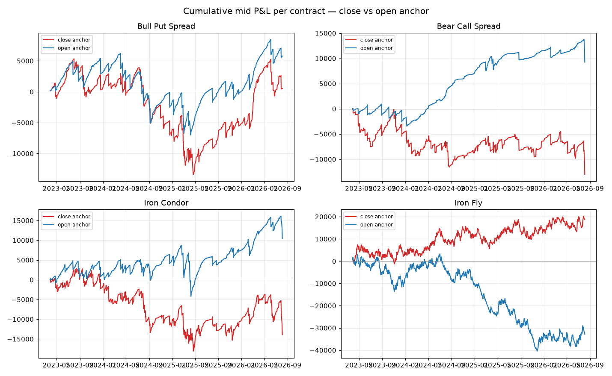

0DTE SPXW premium-selling backtest
2023-03-28 -> 2026-08-04 (840 sessions). Fills: MID (fair) and CROSS (worst-case). $1.30/contract/leg. EM = prior_close x VIX/100 / sqrt(252).
1. Per strategy x anchor (mid fill; cross for reference)
| anchor |
strat |
n |
win% |
mean |
total |
sharpe |
pf |
maxDD |
mean_cross |
total_cross |
| close |
bps |
840 |
92.3 |
0.6 |
527.0 |
0.02 |
1.01 |
18751.0 |
-10.1 |
-8481.0 |
| close |
bcs |
779 |
89.9 |
-16.7 |
-13024.0 |
-0.59 |
0.84 |
13065.0 |
-24.9 |
-19376.0 |
| close |
ic |
786 |
84.4 |
-17.7 |
-13903.0 |
-0.44 |
0.91 |
20876.0 |
-34.8 |
-27333.0 |
| close |
ifly |
834 |
35.9 |
22.4 |
18695.0 |
0.44 |
1.07 |
10033.0 |
-28.5 |
-23733.0 |
| open |
bps |
835 |
95.6 |
6.9 |
5767.0 |
0.25 |
1.09 |
13237.0 |
-1.3 |
-1063.0 |
| open |
bcs |
781 |
96.7 |
11.8 |
9246.0 |
0.71 |
1.32 |
4493.0 |
5.1 |
3948.0 |
| open |
ic |
793 |
92.4 |
13.2 |
10463.0 |
0.41 |
1.11 |
12878.0 |
-2.9 |
-2262.0 |
| open |
ifly |
839 |
38.1 |
-39.1 |
-32822.0 |
-0.75 |
0.90 |
43703.0 |
-78.3 |
-65670.0 |
2. Close- vs Open-anchored (mid mean P&L/trade)
| anchor |
close |
open |
open_edge |
| strat |
|
|
|
| bps |
0.6 |
6.9 |
6.3 |
| bcs |
-16.7 |
11.8 |
28.5 |
| ic |
-17.7 |
13.2 |
30.9 |
| ifly |
22.4 |
-39.1 |
-61.5 |
3. Gap analysis
Bull Put Spread — mean mid P&L by gap bucket
| anchor |
close |
open |
open_edge |
| gap_bucket |
|
|
|
| <-1% |
-224.0 |
204.1 |
428.1 |
| -1..-0.5 |
-14.1 |
67.0 |
81.1 |
| -0.5..-0.2 |
25.0 |
33.5 |
8.5 |
| flat |
23.5 |
21.0 |
-2.5 |
| 0.2..0.5 |
-22.6 |
-19.0 |
3.6 |
| 0.5..1 |
-13.6 |
-53.5 |
-39.9 |
| >1% |
-10.6 |
-241.4 |
-230.8 |
Bear Call Spread — mean mid P&L by gap bucket
| anchor |
close |
open |
open_edge |
| gap_bucket |
|
|
|
| <-1% |
23.2 |
180.8 |
157.6 |
| -1..-0.5 |
11.4 |
-4.8 |
-16.2 |
| -0.5..-0.2 |
-0.9 |
22.8 |
23.7 |
| flat |
1.3 |
6.3 |
5.0 |
| 0.2..0.5 |
-50.2 |
-16.4 |
33.8 |
| 0.5..1 |
1.7 |
41.6 |
39.9 |
| >1% |
-223.1 |
88.9 |
312.0 |
Iron Condor — mean mid P&L by gap bucket
| anchor |
close |
open |
open_edge |
| gap_bucket |
|
|
|
| <-1% |
-108.3 |
83.2 |
191.5 |
| -1..-0.5 |
-65.3 |
62.2 |
127.5 |
| -0.5..-0.2 |
29.4 |
54.8 |
25.4 |
| flat |
22.6 |
33.5 |
10.9 |
| 0.2..0.5 |
-73.0 |
-39.3 |
33.7 |
| 0.5..1 |
-12.0 |
-18.0 |
-6.0 |
| >1% |
-233.8 |
-174.3 |
59.5 |
Iron Fly — mean mid P&L by gap bucket
| anchor |
close |
open |
open_edge |
| gap_bucket |
|
|
|
| <-1% |
13.3 |
-1.3 |
-14.6 |
| -1..-0.5 |
77.1 |
-22.7 |
-99.8 |
| -0.5..-0.2 |
-72.6 |
-34.9 |
37.7 |
| flat |
41.3 |
16.1 |
-25.2 |
| 0.2..0.5 |
45.3 |
-128.7 |
-174.0 |
| 0.5..1 |
25.2 |
-85.6 |
-110.8 |
| >1% |
-133.2 |
-107.6 |
25.6 |
4. Equity curves
